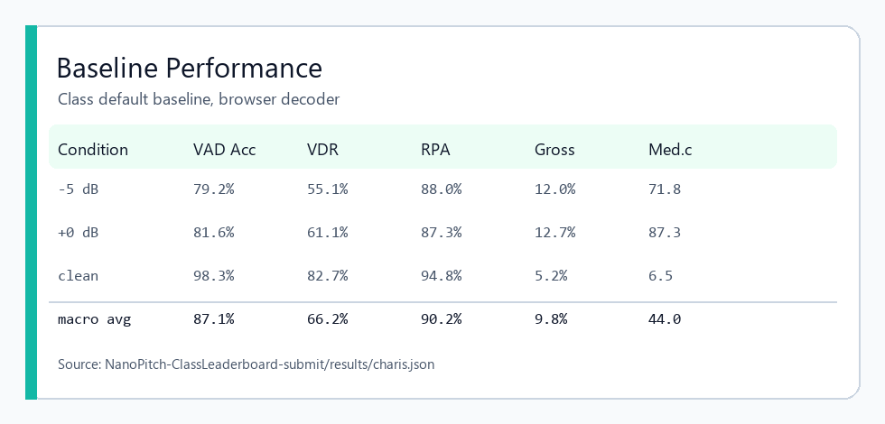
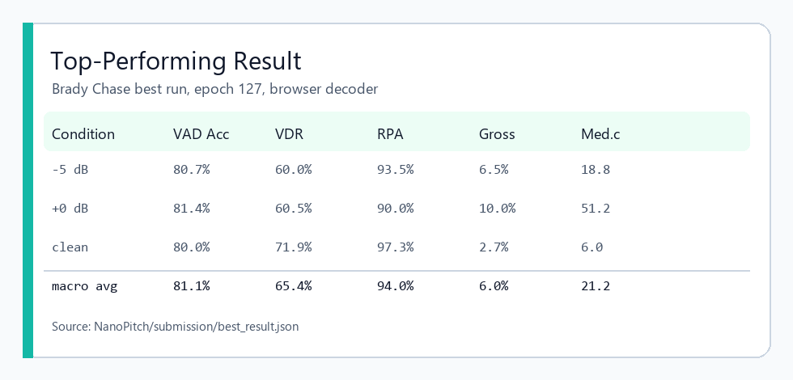

Project 1 NanoPitch Summary - Brady Chase
Top model: vdr_focus_gru96_ft80, checkpoint epoch 127, loss 0.02686,
GRU size 96, condition size 64, learning rate 1e-4. Submitted to the class leaderboard as
submissions/brady_chase/weights.pth.
Overview / Strategy
- Goal: improve NanoPitch's real-time singing pitch tracker under noisy test conditions while keeping the model deployable in the browser.
- Strategy: train on realistic noisy log-mel mixtures, tighten voiced-frame learning, and fine-tune the same small GRU-96 architecture instead of making the model too large for realtime use.
Modifications
- Implemented random-SNR log-mel noise augmentation with
torch.logaddexp.
- Added f0/VAD/union voicing target options, boundary weighting, positive/focal VAD weighting, and voiced balanced sampling.
- Added cosine scheduling support, gradient-norm logging, improved evaluator options, and exported the best weights for web/leaderboard use.
Rationale
- Noise mixing matched the leaderboard SNRs better than clean-only training.
- F0-aware voicing and boundary weights focused learning on the frames that most affect VDR/RPA near onsets, offsets, and noisy voiced regions.
- Longer low-LR fine-tuning improved pitch accuracy without increasing inference cost.
Impact on Performance
- Realtime macro RPA improved from 90.2% baseline to 94.0%.
- Noisy -5 dB RPA improved from 88.0% to 93.5%; clean RPA improved from 94.8% to 97.3%.
- Macro gross error dropped from 9.8% to 6.0%. Tradeoff: official VAD accuracy dropped from 87.1% to 81.1% because the run emphasized pitch/voicing accuracy.
Baseline vs. Best Model
| Model |
Realtime Macro RPA |
Clean RPA |
-5 dB RPA |
Macro Gross Err |
Macro VAD Acc |
| Class default baseline |
90.2% |
94.8% |
88.0% |
9.8% |
87.1% |
| Brady best run |
94.0% |
97.3% |
93.5% |
6.0% |
81.1% |
Repo Link
GitHub repo: https://github.com/Festus-Ewakaa-Kahunla/NanoPitch/tree/Brady_dev.
Leaderboard submission branch: https://github.com/illusion3333/NanoPitch/tree/brady-chase-best-run.
Screenshots

Baseline performance from the class default baseline result JSON.

Top-performing submitted model evaluated with realtime Viterbi.